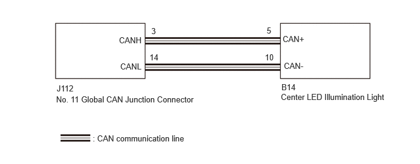

| Last Modified: 10-07-2025 | 6.11:8.1.0 | Doc ID: RM100000002LT7C |
| Model Year Start: 2024 | Model: Tacoma | Prod Date Range: [03/2024 - ] |
| Title: LIGHTING (EXT): LIGHTING SYSTEM: Light Emitting Diode Illumination Control Unit Communication Circuit; 2024 - 2026 MY Tacoma Tacoma HV [03/2024 - ] | ||
|
Light Emitting Diode Illumination Control Unit Communication Circuit |
DESCRIPTION
The center LED illumination light detects the condition of high beam via CAN communication.
WIRING DIAGRAM
CAUTION / NOTICE / HINT
NOTICE:
- Because the order of diagnosis is important to
allow correct diagnosis, make sure to begin
troubleshooting using How to Proceed with
Troubleshooting when CAN communication system related
DTCs are output.
Click here
![2024 - 2026 MY Tacoma HV [03/2024 - ]; NETWORKING: CAN COMMUNICATION SYSTEM (except Gasoline Model): HOW TO PROCEED WITH TROUBLESHOOTING](../../../../stylegraphics/info.gif)
- Inspect the fuses for circuits related to this system before performing the following procedure.
- Before measuring the resistance of the CAN bus, turn the ignition switch off and leave the vehicle for 1 minute or more without operating the key or any switches, or opening or closing the doors. After that, disconnect the cable from the negative (-) auxiliary battery terminal and leave the vehicle for 1 minute or more before measuring the resistance.
- After the ignition switch is turned off, there
may be a waiting time before disconnecting the
negative (-) auxiliary battery terminal.
Click here
- When disconnecting and reconnecting the auxiliary
battery.
HINT:
When disconnecting and reconnecting the auxiliary battery, there is an automatic learning function that completes learning when the respective system is used.
Click here
- Some parts must be initialized and set when
replacing or removing and installing parts.
Click here
- After performing repairs, perform the DTC check
procedure and confirm that the DTCs are not output
again.
DTC check procedure: Turn the ignition switch to ON and wait for 1 minute or more. Then operate the suspected malfunctioning system and drive the vehicle at 60 km/h (37 mph) or more for 5 minutes or more.
- After the repair, perform the CAN bus check and
check that all the ECUs and sensors connected to the
CAN communication system are displayed as normal.
Click here
HINT:
- Before disconnecting related connectors for inspection, push in on each connector body to check that the connector is not loose or disconnected.
- When a connector is disconnected, check that the terminals and connector body are not cracked, deformed or corroded.
PROCEDURE
PROCEDURE
|
1. |
BUS INSPECTION (CHECK CONNECTED ECUS AND SENSORS USING GTS) |
(a) Based on the vehicle equipment and specifications, confirm the systems that use CAN communication.
Click here
(b) Select "CAN Bus Check" from the screen on the GTS.
(c) Observe the screen for approximately 2 minutes to check the ECUs and sensors displayed on the screen.
(d) Check for ECUs or sensors with a background color that indicates that they are currently not communicating.
NOTICE:
- A sub bus monitoring ECU outputs DTCs for its respective ECUs and sensors. Identify the malfunctioning ECU or sensor using the output DTCs.
- ECUs or sensors that are not installed to the vehicle will not be displayed. Do not mistake these for ECUs or sensors that are not communicating.
- When using the combo box, it may be possible to select a sub bus from the drop down list that does not have any connected ECUs or sensors. This is not a malfunction and occurs when there is no optional device connected to a sub bus which is monitored by a sub bus monitoring ECU (gateway function equipped ECU).
HINT:
- For details on how to read the "Communication Bus
Check" screen, refer to Description of "Communication
Bus Check" screen.
Click here
- If there is an ECU or sensor whose connection status changes intermittently while checking the "Communication Bus Check" screen, there may be an open circuit in one of the wires of a branch line of an ECU or sensor in the bus. If an open occurs in one of the wires of a CAN branch line, it may interfere with the communication of other ECUs or sensors resulting in an incorrect state being displayed.
- The central gateway ECU (network gateway ECU) displays the connection status of ECUs and sensors connected to the central bus on the GTS.
- Sub bus monitoring ECUs display the connection status of ECUs and sensors connected to their respective sub bus on the GTS.
- If a CAN commutation DTC is output for an ECU
connected to the sub bus, refer to the corresponding
diagnostic procedure.
Click here
|
Result |
Proceed to |
|---|---|
|
No ECUs or sensors are displayed as not communicating. |
A |
|
ECUs or sensors are displayed as not communicating. |
B |
| B |  |
|

|
2. |
CHECK FOR OPEN IN CAN BUS BRANCH WIRE (CENTER LED ILLUMINATION LIGHT) |
(a) Disconnect the cable from the negative (-) auxiliary battery terminal.
(b) Disconnect the B14 Center LED Illumination Light connector.
(c) Measure the resistance according to the value(s) in the table below.
Standard Resistance:

Click Location & Routing(B14)
Click Connector(B14)
|
Tester Connection |
Condition |
Specified Condition |
|---|---|---|
|
B14-5 (CAN+) - B14-10 (CAN-) |
Cable disconnected from negative (-) auxiliary battery terminal |
54 Ω to 69 Ω |
| OK | |
| NG | |
REPAIR OR REPLACE CAN BUS BRANCH WIRE OR CONNECTOR (NO. 11 GLOBAL CAN JUNCTION CONNECTOR - CENTER LED ILLUMINATION LIGHT) |